Search
Table of Contents
Description
Version 2.0.8
Extension page: http://www.rocketweb.com/kick-butt-search
Magento's default search is far from optimal. The Kick Butt Search extension will improve your store's search results by both making the search more relevant and giving you a set of handy methods to directly change the search results
Features
- Increase the relevance of keyword matches in titles and/or SKUS for a better ordering of your search results
- Allows searching through cms pages, blog posts (created with the AheadWorks Blog module) and categories
- Allows defining a set of search terms and their exact search results. You can also define a single entity for a search term which will take the users directly to the entities' detail page instead of passing through the results page
- Allows increasing search weight for specific products so they appear higher in the results
Installation
Backup your data
Backup the database and your store's web directory.
Disable Compilation
This step is for Magento 1.4+ versions. If you are running an older version, this step can be skipped. In the Magento admin panel, go to System->Tools->Compilation. In case "Compiler Status" is "Enabled", click on the "Disable" button (in case the status is disabled you can skip this step):
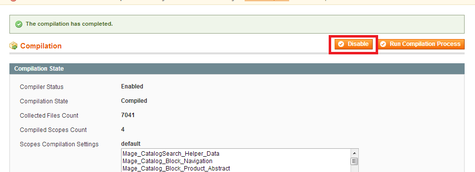
This screen should now look like this:
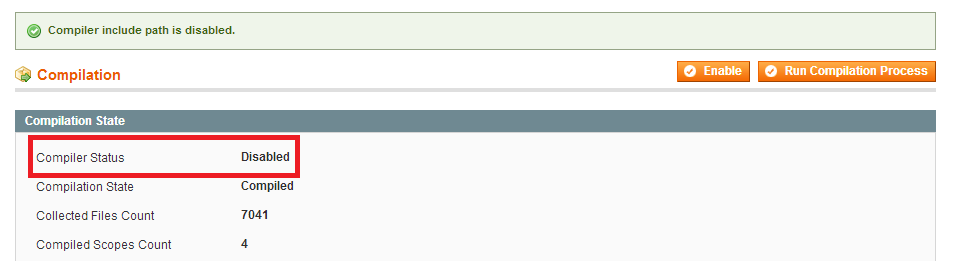
Download and Extract
Download and extract (unzip) the extension's contents on you computer. Navigate inside the extracted folder.
Upload files
Using a FTP client, upload the content of the extension directory to the store's document root, so that the app directory in the extension folder overwrites the app directory on the server. If asked to replace any files, select "Yes".
Clear the cache
In the Magento admin panel, go to System->Cache Management and press the "Flush Magento Cache" button:
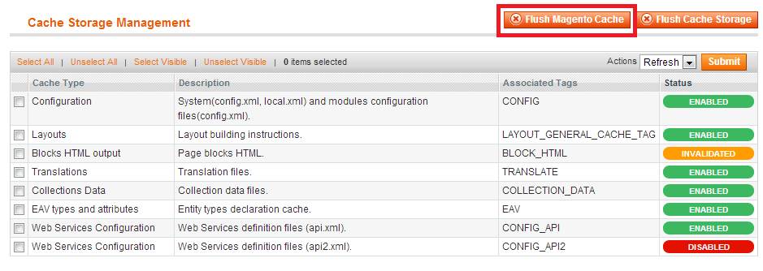
Re-index catalog search index
A message that the catalog search index is not up to date will appear. Click on the link:
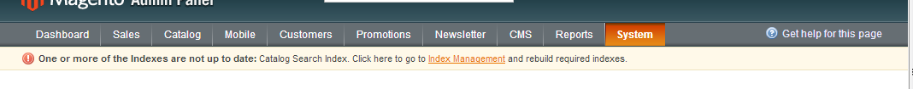
Select the "Catalog Search Index" and press the submit action, making sure the selected action is "Reindex Data" (depending on the number of products, this may take a while):
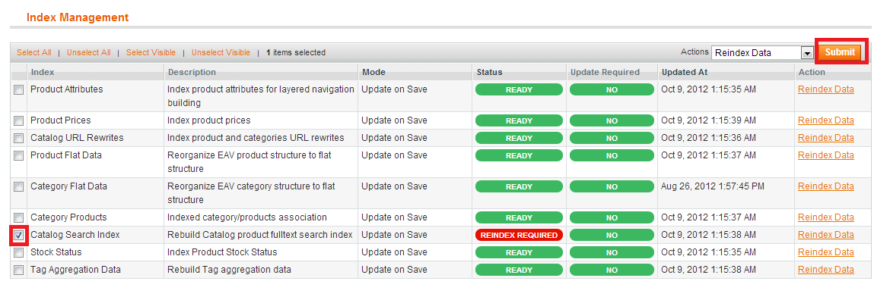
Configuration
The meaning of title, sku and content fields for the searcheable entities
Kick Butt Search will split the searchable fields into "title", "sku" and "content". The "content" ones will always have the weight of one, while title and sku can be configured (they have the weights 5 and 3 by default). The whole point of weights is to give more importance to certain fields like product title or blog keywords, improving the quality of the search results. The following table describes what entity attributes does each field contain:
| Entity | Title field | Sku Field | Content field |
|---|---|---|---|
| Product | Product name | Product SKU | All product attributes defined as searchable |
| Category | Category name | n/a | Category description |
| CMS Page | CMS page title, Content heading | n/a | CMS page content |
| Blog | Blog post title, keywords | n/a | Blog post content |
Increasing relevance for title and sku
(This feature is on by default, follow these steps if you want to change/tweak it)
In the Magento admin panel, go to System->Configuration, then click on the "Kick Butt Search" link from the right menu, located under "ROCKETWEB EXTENSIONS". You will see the following screen:
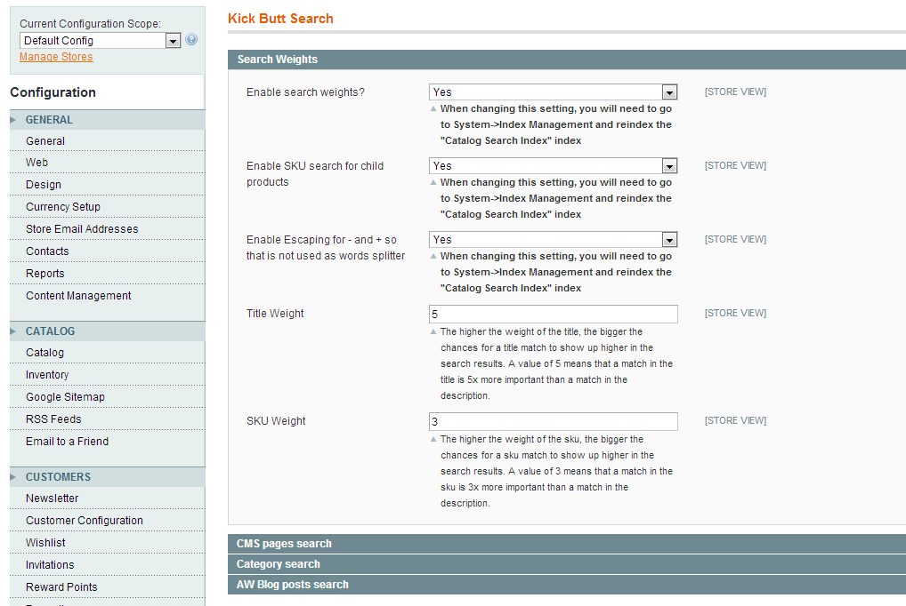
From here, you can enable and disable this feature. Note that you will need to re-index the Catalog Search Index after a enable/disable operation.
The next option is to Enable the search of skus in the products that are associated or compose a configurable, bundle or grouped product.
The third option is to escape "-" or "+" characters when the search is done in Combined mode. If this option is disabled MySQL match against will split the words and give more results that might not be relevant.
You can also change the weight of the title or sku from here. A weight of 5 for the title means that a keyword match in the title will be 5 times more important than a match in the description/other fields. A weight of 0 makes the title match be as important as any other match (default behaviour). Note that this only changes the order of you search results, not the number of found items.
Back on the frontend, a search for a term will bring the title matches first, which is something that you want in most cases:
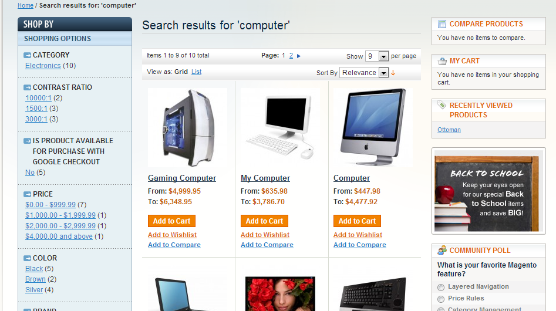
Increase the search weight for a specific product
This feature is usefull if you have products that you want to show higher in the search results
In the Magento admin panel, go and edit the product you want to assign a higher weight:
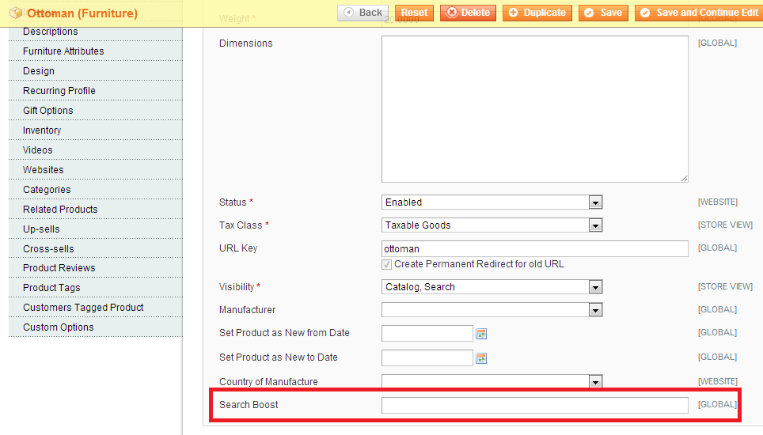
The Search Boost attribute is a numeric value that defines how important a product is in search results. A value of empty, zero or one means that the product does not have any special weight.
The weight must be considered in context: If product X has the boost attribute set to two and you do a search that does not matches X's title, other products that have title matches will appear first (as the title match is 5x), but X will appear as the first of the products that do not have a title match. If you would set the boost to 10, then X will appear in front of the products that have title matches too. Setting proper boosts requires some experimentation with the search results, as boosts that are too big may bring irrelevant results in the top of the searches.
Searching through CMS pages
General configuration
First, make sure that CMS search is enabled by going to System->Configuration->Kick Butt Search, "CMS pages search" tab and making sure that "Enable searching through CMS Pages?" is set to "Yes"
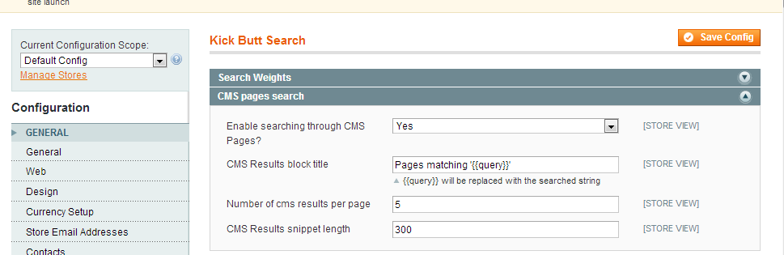
After this, re-index catalog search index (Click here to see how).
CMS pages are now available in the search results:
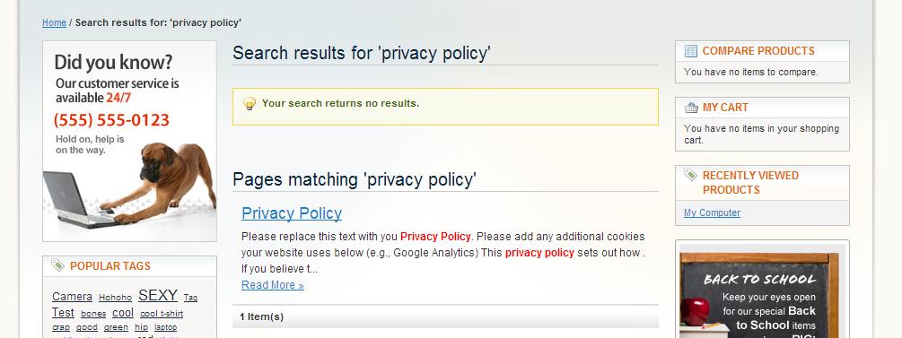
Deciding which CMS pages are searchable
By default, all CMS pages except "404 Not Found" and "Enable Cookies" are searchable. You can set each page to be visible in search by setting the "Is Searchable" attribute to "Yes" or "No" inside the CMS Add/Edit screen:
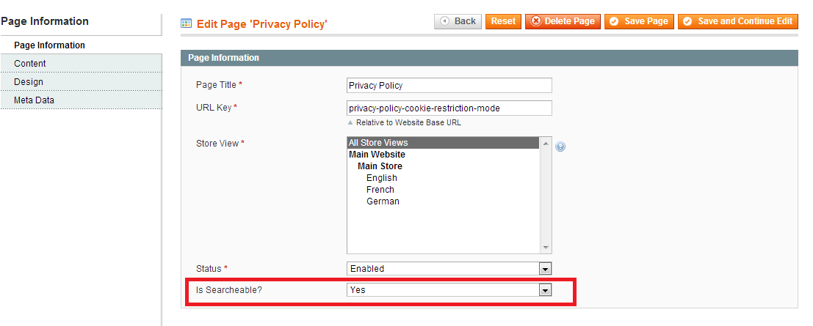
CMS Search results display settings
The search results page aspect can be defined at System->Configuration->Kick Butt Search, "CMS pages search" tab:
- CMS Results block title - defines the title of the CMS search results block. You can use the {{query}} placeholder to display the searched string
- Number of cms results per page - how many CMS page search results are displayed per page
- CMS Results snippet length - The cms results also display as snippet of the page text. The snippet is stripped of html tags and will display one of the text portions that contains the searched keywords. This parameter defines the maximum snippet length, in number of characters
Searching through blog posts
Making sure AheadWorks Blog module is installed
Kick Butt Search is able to search through blog posts that are created with the Aheadworks Blog module. The module is available at http://ecommerce.aheadworks.com/free-stuff/blog.html for free. If you do not have this module installed, please follow the details at http://doc.aheadworks.com/magento-extensions/AW_Blog-1.2.1/readme.html to install it.
Important: In case you install the blog module after you have installed Kick Butt Search, you will need to update the database to add the searchable attribute to blog posts. You can do this by going to System->Configuration->Kick Butt Search, "AW blog posts search" tab and clicking on the "Add "Is Searchable" option to blog posts" button:
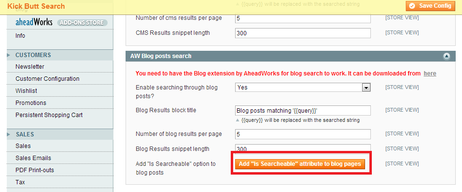
You will get a success message. Also, on page refresh, the button wil dissappear which means that the database was updated sucesfully.
General configuration
First, make sure that Blog search is enabled by going to System->Configuration->Kick Butt Search, "AW Blog posts search" tab and making sure that "Enable searching through blog posts?" is set to "Yes". Also, make sure you have installed the AW Blog extension as explained in the previous section and that you have clicked the Add "Is Searchable" option to blog posts button if needed.
Deciding which blog postss are searchable
By default, all blog posts are searchable. You can set each blog post to be visible in search by setting the "Is Searchable" attribute to "Yes" or "No" inside the Blog post Add/Edit screen:
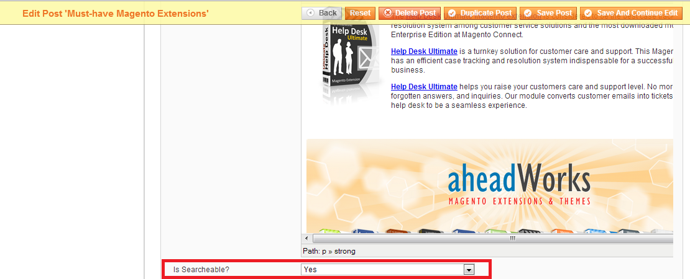
Blog Search results display settings
The search results page aspect can be defined at System->Configuration->Kick Butt Search, "AW Blog posts search" tab:
- Blog Results block title - defines the title of the blog search results block. You can use the {{query}} placeholder to display the searched string
- Number of blog results per page - how many blog search results are displayed per page
- Blog Results snippet length - The blog results also display as snippet of the page text. The snippet is stripped of html tags and will display one of the text portions that contains the searched keywords. This parameter defines the maximum snippet length, in number of characters
Searching through categories
General configuration
First, make sure that Category search is enabled by going to System->Configuration->Kick Butt Search, "Category search" tab and making sure that "Enable searching through categories?" is set to "Yes"

After this, re-index catalog search index (Click here to see how).
Categories are now available in the search results:
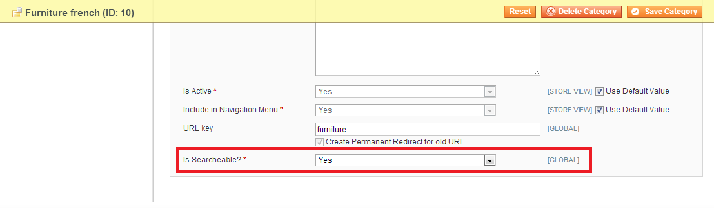
Deciding which categories are searchable
By default, all cagtegories except root-level ones are searchable. You can set each category to be visible in search by setting the "Is Searchable" attribute to "Yes" or "No" inside the Category Add/Edit screen:
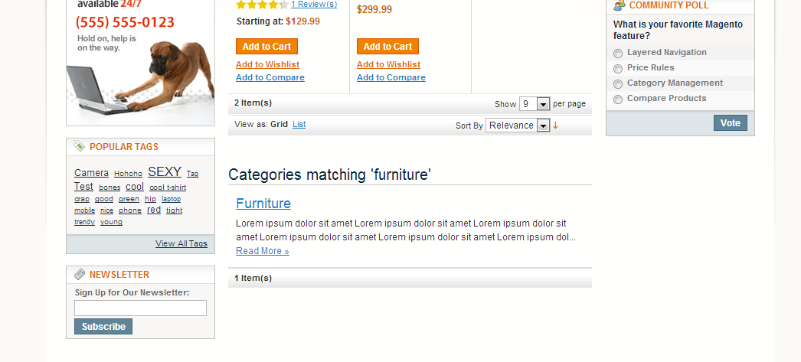
Category Search results display settings
The search results page aspect can be defined at System->Configuration->Kick Butt Search, "Categories search" tab:
- Category Results block title - defines the title of the category search results block. You can use the {{query}} placeholder to display the searched string
- Number of category results per page - how many category search results are displayed per page
- Category Results snippet length - The category results also display as snippet of the category description. The snippet is stripped of html tags and will display one of the text portions that contains the searched keywords. This parameter defines the maximum snippet length, in number of characters
Defining direct search queries
The direct search query feature of Kick Butt Search is helpfull in two scenarios:
- You want to define a "I'm feeling lucky" search. When searching for a specific query, you want the user to be taken directly to a product detail/ category detail/cms page/blog post instead of showing a traditional search results page.
- You want to have total control over the results displayed for a specific query.
To define a search term with exact results, go to Catalog->Direct Search Queries in the admin panel. The page will list all the direct searches (empty if this is the first time you are using it). Press the "Add Direct Search Result" button:
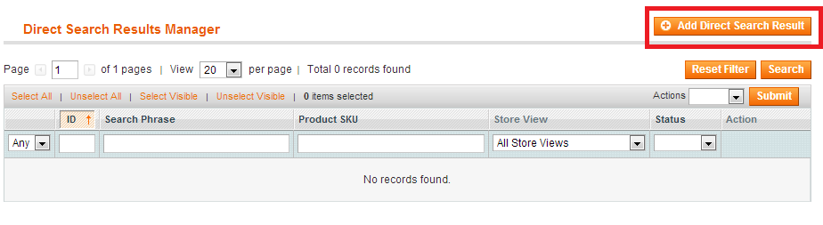
Fill in the fields for the direct search result:
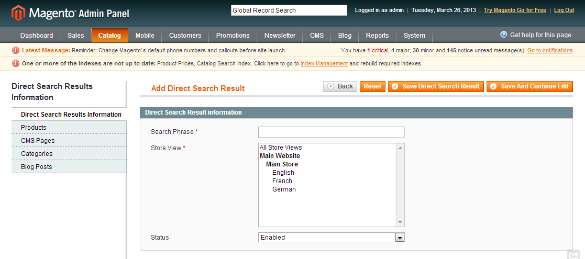
- Search Phrase: the exact search phrase that we want to define search results for
- Store view: If you want this to be active only on certain store views, set them here. Leave "All store views" selected to apply it on all your storeviews
- Status: enable/disable this direct search query
After filling the general details, go to the one or more of the additional tabs (Products, CMS Pages, Blogs, Categories) and pick one or more entities that will be displayed in the search results. For each search result, you can specify a numeric "order" parameter. This will define the order of the search results (the lower the number the higher the result). Here is an example on how to pick 2 products and add order numbers:
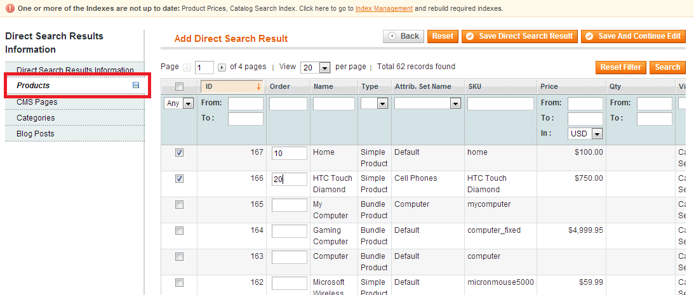
You cannot specify zero entities for a search result. If you specify a single entity, the customer will be directly taken to that entitie's detail page. If multiple results are specified, the customer will see a result page with the defined entities.
Troubleshooting
When I try to access your extension's configuration at System->Configuration->[[EXTENSION PATH]], I get a 404 error
Logout & Login back into the Magento admin panel.
I have installed the AW Blogs extension and want to search blog entries, but now I am getting a fatal error when doing a search
If you installed the blog extension after Kick Butt Search, do the step described here
I cannot see entity X on my search results. What do I do?
- Try re-indexing catalog search (click here to see how to do it)
- Make sure the entity type is searchable. For example, if you are missing a CMS page result, go to System->Configuration->Kick Butt Search and make sure "Enable searching through CMS Pages?" is set to "Yes". If it was set to "No", you need to re-index catalog search after enabling. Product search is always enabled
- Is your specific entity searchable? Go to the entity edit screen (i.e. CMS page edit screen) and make sure the "Is Searchable" property is set to "Yes"
- Are you sure there is no direct search result defined for you search? Go to Catalog -> Direct Search Queries and make sure the string you are searching for is not defined as a direct search query which does not include your result
- On what attribute is the keyword(s) you are searching for defined inside the entity? Have a look at The meaning of title, SKU and content fields for the searchable entities. If the keyword is part of an attribute that is not present in that table, it will not be searched
I see that you extension searches through blog posts, but I cannot see any option related to blogs, neither can I search through them.
Kick Butt Search searches through blog posts created with the AheadWorks Blog module. See here on how to install this extension. If you have a different blog extension installed, Kick Butt Search will not be able to search through the posts.
How to set ft_min_word_len and repair the database.
To set "ft_min_word_len" someone has to have access to mysql's configuration file "my.cnf". On a linux system with a default configuration it can be found under "/etc/mysql/my.cnf". This file has some sections that have titles written in brackets. To add or change "ft_min_word_len" we have to look under the section "[mysqld]". If it's not already there we can add it on a new line with the value that we want (default value is 4), for example 3 "ft_min_word_len = 3". After you set the "ft_min_word_len" you have to restart the mysql server and you can check the new value by running the following query "show variables like 'ft_min_word_len'". After restarting the server, the databases have to be repaired, to do a check on repair on all you can use: "mysqlcheck -u root -p --auto-repair -c --all-databases". We recommend that you first try this on a development server that has the same mysql instance and databases as the production server, before trying this on the production server. If you don't have ssh access to the server, please ask your hosting provider to do these changes for you.